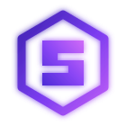
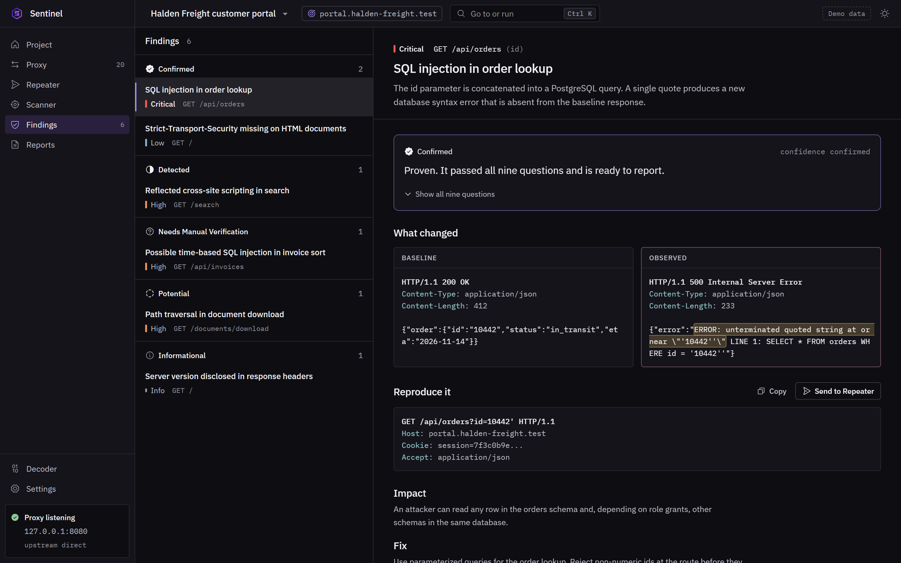
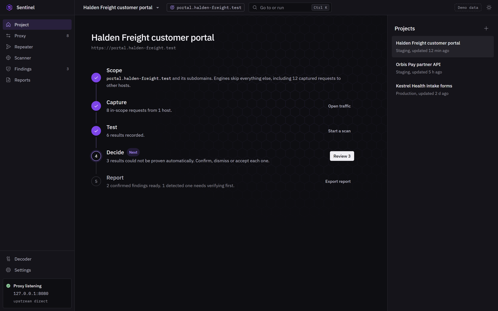

shop.example, order history page
Other customers' orders could be read
We load the page three times without changing anything. It behaves the same each time.
- Normal page
- Order 1042 shown
- Same result
- 3 of 3 times
Sentinel tests your apps and reports only what it can prove, with the evidence your team needs to fix it.


One clear verdict per issue. What was tested, what happened, and why it matters.
If an issue cannot pass them, it is never reported as fact.
Check 1 of 9
shop.example, order history page
We load the page three times without changing anything. It behaves the same each time.
Every check is tried on a deliberately broken app and on a safe one. It must catch the first and stay silent on the second.
Missing browser protections
Flagged only on real web pages. Never on data feeds, redirects or error pages.
Script injection
Counted only when the test comes back exactly as sent, in a place a browser would run it.
Database injection
Needs a new error, a real delay or a real change in results. A matching keyword is never enough.
Full runs
The real checks, run start to finish against live test apps, safe and unsafe.
No new check ships without tests for both cases.
Everything about an issue stays in one place, from the first test to the final report.
Add your app and choose exactly what Sentinel may touch.
Sentinel probes for real weaknesses, the way an attacker would.
Only issues that pass all nine checks are reported as proven.

Every test is checked against your approved list before it is sent. Anything else is skipped and logged.
Start with one app. Sentinel only tests systems you own or have permission to test.